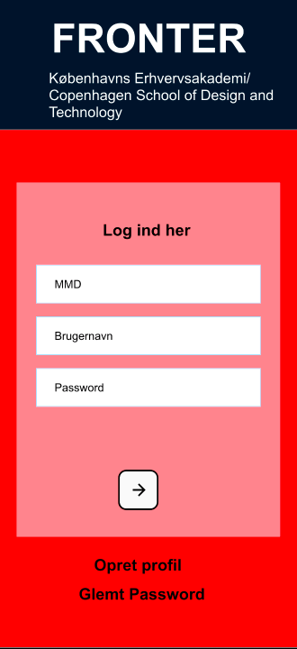
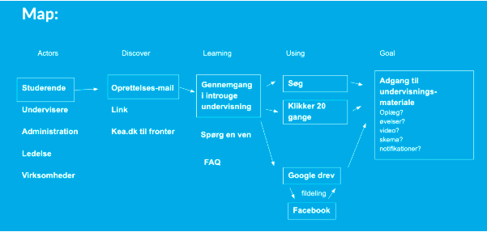

Kan ses her: Link
Dette var vores sidste tema inden eksamen. I dette forløb skulle vi lære samspillet mellem bruger og brugergrænseflader. Samt hvilke teorier,metoder,redskaber man kan bruge til test af produktion til digitale løsninger til smartphones. I den første uge udførte vi et designsprint sammen, i ugerne efterfølgende skulle vi selv udføre designsprintet først individuelt og derefter i grupper.
Jeg valgte at bruge designsprint til at løse vores stillet opgave nemlig Egen prototype. Da dette var denne metode, som vi lærte ugen forinden, selve designsprintet giver en god stuktur om hvordan man skal opbygge sin process.
Den første del i design-sprint er at finde et long term goal. Dette gjorde vi i fællesskab og vi kom frem til dette long-term goal og sprint-questions.
Vi finder udfordringerne i vores long term goal og sprint-questions ud fra et map
Vi skitsere vores ideer ud fra forskellige sketch øvelser
Jeg synes at lighting Demos fungerede bedst, da der var her vi skulle undersøge, hvilke ting som fungerede bedst på apps og hjemmesider. De giver en god grundviden, om hvad der fungere og hvad der ikke gør? Jeg kunne godt lide at vi fik samlet alle vores ideer, som gav en god grundstruktur til at designe sin egen prototype.